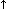
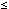
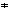

J.W. Backus, F.L. Bauer, J.Green, C. Katz, J. McCarthy
P. Naur, A.J. Perlis, H. Rutishauser, K. Samuelson, B. Vauquois
J.H. Wegstein, A. van Wijngaarden, M. Woodger
[originally] Edited by
Peter Naur
Dedicated to the memory of William Turanski
The introduction contains an account of the preparatory work leading up to the final conference, where the language was defined. In addition the notions reference language, publication language, and hardware representations are explained.
In the first chapter a survey of the basic constituents and features of the language is given, and the formal notation, by which the syntactic structure is defined, is explained.
The second chapter lists all the basic symbols, and the syntactic units known as identifiers, numbers, and strings are defined. Further some important notions such as quantity and value are defined.
The third chapter explains the rules for forming expressions and the meaning of these expressions. Three different types of expressions exist: arithmetic, Boolean (logical), and designational.
The fourth chapter describes the operational units of the language, known as statements. The basic statements are: assignment statements (evaluation of a formula), go to statements (explicit break of the sequence of execution of statements), dummy statements, and procedure statements (call for execution of a closed process, defined by a procedure declaration). The formation of more complex structures, having statement character, is explained. These include: conditional statements, for statements, compound statements, and blocks.
In the fifth chapter the units known as declarations, serving for defining permanent properties of the units entering into a process described in the language, are defined.
The report ends with two detailed examples of the use of the language and an alphabetic index of definitions.
| (1) | Preliminary report - International Algebraic Language, Comm. Assoc. Comp. Mach. 1, No. 12 (1958), 8. |
| (2) | Report on the Algorithmic Language Algol by the ACM Committee on Programming Languages and the GAMM Committee on Programming, edited by A. J. Perlis and K. Samuelson, Numerische Mathematik Bd. 1, S. 41-60 (1959). |
As a result of an informal meeting held at Mainz in November 1958, about forty interested persons from several European countries held an Algol implementation conference in Copenhagen in February 1959. A ``hardware group'' was formed for working cooperatively right down to the level of the paper tape code. This conference also led to the publication by Regnecentralen, Copenhagen, of an `Algol Bulletin', edited by Peter Naur, which served as a forum for further discussion. During the June 1959 ICIP Conference in Paris several meetings, both formal and informal ones, were held. These meetings revealed some misunderstandings as to the intent of the group which was primarily responsible for the formulation of the language, but at the same time made it clear that there exists a wide appreciation of the effort involved. As a result of the discussions it was decided to hold an international meeting in January 1959 for improving the Algol language and preparing a final report. At a European Algol Conference in Paris in November 1959 which was attended by about fifty people, seven European representatives were selected at attend the January 1960 Conference, and they represent the following organisations: Association Française de Calcul, British Computer Society, Gesellschaft für Angewandte Mathematik und Mechanik, and the Nederlands Rekenmachine Genootschap. The seven representatives held a final preparatory meeting at Mainz in December 1959.
Meanwhile, in the United States, anyone who wished to suggest changes or corrections to Algol was requested to send his comments to the `Communications of the ACM', where they were published. These comments then became the basis of consideration for changes in the Algol language. Both the SHARE and USE organisations established Algol working groups, and both organisations were represented on the ACM Committee on Programming Languages. The ACM Committee met in Washington in November 1959 and considered all comments on Algol that had been sent to the ACM `Communications'. Also, seven representatives were selected to attend the January 1960 international conference. The seven representatives held a final preparatory meeting in Boston in December 1959.
| (1) | William Turanski of the American group was killed by an automobile just prior to the January 1960 Conference. |
Prior to this meeting a completely new draft report was worked out from the preliminary report and the recommendations of the preparatory meetings by Peter Naur and the Conference adopted this new form as the basis for its report. The Conference then proceeded to work for agreement on each item of the report. The present report represents the union of the Committee's concepts and the intersection of its agreements.
Authors Advisers Observer F. L. Bauer M. Paul W. L. van der Poel J. Green R. Franciotti (Chairman, IFIP TC 2.1 C. Katz P. Z. Ingerman Working Group Algol) R. Kogon (representing J.W. Backus) P. Naur K. Samuelson G. Seegemüller J. H. Wegstein R.E. Utman A. van Wijngaarden M. Woodger P. Landin
The purpose of the meeting was to correct known errors in, attempt to eliminate apparent ambiguities in, and otherwise clarify the Algol 60 Report. Extensions to the language were not considered at the meeting. Various proposals for correction and clarification that were submitted by interested parties in response to the Questionnaire in Algol Bulletin No. 14 were used as a guide.
This report constitutes a supplement to the Algol 60 Report which should resolve a number of difficulties therein. Not all of the questions raised concerning the original report could be resolved. Rather than risk of hastily drawn conclusions on a number of subtle points, which might create new ambiguities, the committee decided to report only those points which they unanimously felt could be stated in clear and unambiguous fashion.
Questions concerned with the following areas left for further consideration by Working Group 2.1 of IFIP, in the expectation that current work on advanced programming languages will lead to better resolution:
This report has been reviewed by IFIP TC 2 on Programming Languages in August 1962 and has been approved by the Council of the International Federation for Information Processing.
As with the preliminary Algol report, three different levels of language
are recognized, namely a Reference Language, a Publication Language, and
several Hardware Representations.
For transliteration between the reference language and a language suitable for publications, among others, the following rules are recommended.
Reference Language Publication Language Subscript brackets [ ] Lowering of the line between the brackets and removal of the brackets. Exponentiation  Raising the exponent. Parentheses () Any form of parentheses, brackets, braces. Basis of ten 10 Raising of the ten and of the following integral number, inserting of the intended multiplication sign.
|
|
Was sich überhaupt sagen läßt, läßt sich
klar sagen; und wovon man nicht reden kann, darüber muß man schweigen. |
| Ludwig Wittgenstein |
The purpose of the algorithmic language is to describe computational processes. The basic concept used for the description of calculating rules is the well known arithmetic expression containing as constituents numbers, variables, and functions. From such expressions are compounded, by applying rules of arithmetic composition, self-contained units of the language -- explicit formulae -- called assignment statements.
To show the flow of computational processes, certain non-arithmetic statements and statement clauses are added which may describe e.g., alternatives, or iterative repetitions of computing statements. Since it is necessary for the function of the statements that one statement refers to another, statements may be provided with labels. A sequence of statements may be enclosed between the statement brackets begin and end to form a compound statement.
Statements are supported by declarations which are not themselves computing instructions, but inform the translator of the existence and certain properties of objects appearing in statements, such as the class of numbers taken on as values by a variable, the dimension of an array of numbers, or even the set of rules defining a function. A sequence of declarations followed by a sequence of statements and enclosed between begin and end constitutes a block. Every declaration appears in a block in this way and is valid only for that block.
A program is a block or compound statement which is not contained within another statement and which makes no use of other statements not contained within it.
In the sequel the syntax and semantics of the language will be given (1).
| (1) | Whenever the precision of arithmetic is stated as being in general not specified, or the outcome of a certain process is left undefined or said to be undefined, this is to be interpreted in the sense that a program only fully defines a computational process if the accompanying information specifies the precision assumed, the kind of arithmetic assumed, and the course of action to be taken in all such cases as may occur during the execution of the computation. |
| (1) | Cf. J. W. Backus, The syntax and semantics of the proposed international algebraic language of the Zuerich ACM-GRAMM conference. ICIP Paris, June 1959. |
Their interpretation is best explained by an example:
<ab> ::= ( | [ | <ab> ( | <ab> <d>Sequences of characters enclosed in the bracket <> represent metalinguistic variables whose values are sequences of symbols. The marks ::= and | (the latter with the meaning of or) are metalinguistic connectives. Any mark in a formula, which is not a variable or a connective, denotes itself (or the class of marks which are similar to it). Juxta position of marks and/or variables in a formula signifies juxtaposition of the sequences denoted. Thus the formula above gives a recursive rule for the formation of values of the variable <ab>. It indicates that <ab> may have the value ( or [ or that given some legitimate value of <ab>, another may be formed by following it with the character ( or by following it with some value of the variable <d>. If the values of <d> are the decimal digits, some values of <ab> are:
[(((1(37( (12345( ((( [86In order to facilitate the study, the symbols used for distinguishing the metalinguistic variables (i.e. the sequence of characters appearing within the brackets <> as ab in the above example) have been chosen to be words describing approximately the nature of the corresponding variable. Where words which have appeared in this manner are used elsewhere in the text they will refer to the corresponding syntactic definition. In addition some formulae have been given in more than one place.
Definition:
<empty> ::=(i.e. the null string of symbols).
<basic symbol> ::= <letter> | <digit> | <logical value> | <delimiter>
<letter> ::= a | b | c | d | e | f | g | h | i | j | k | l | m | n | o | p | q | r | s | t | u | v | w | x | y | z | A | B | C | D | E | F | G | H | I | J | K | L | M | N | O | P | Q | R | S | T | U | V | W | X | Y | ZThis alphabet may be arbitrarily restricted, or extended with any other distinctive character (i.e. character not coinciding with any digit, logical value or delimiter).
Letters do not have individual meaning. They are used for forming identifiers
and strings (1) (cf. sections 2.4. Identifiers, 2.6.
Strings).
| (1) | It should be particularly noted that throughout the reference language underlining [here this looks like underlined; N.L.] is used for defining independent basic symbols (see sections 2.2.2 and 2.3). These are understood to have no relation to the individual letters of which they are composed. Within the present report underlining will be used for no other purposes. |
<digit> ::= 0 | 1 | 2 | 3 | 4 | 5 | 6 | 7 | 8 | 9Digits are used for forming numbers, identifiers, and strings.
<logical value> ::= true | falseThe logical values have a fixed obvious meaning.
<delimiter> ::= <operator> | <separator> | <bracket> | <declarator> | <specificator> <operator> ::= <arithmetic operator> | <relational operator> | <logical operator> | <sequential operator> <arithmetic operator> ::= + | - | | / | ÷ | <relational operator> ::= < |  | = || > |  <logical operator> ::= | | | | ¬ <sequential operator> ::= goto | if | then | else | for | do (2) <separator> ::= , | . | 10 | : | ; | := | | step | until | while | comment <bracket> ::= ( | ) | [ | ] | ` | ' | begin | end <declarator> ::= own | Boolean | integer | real | array | switch | procedure <specificator> ::= string | label | value
| (2) | do is used in for statements. It has no relation to the do of the preliminary report, which is not included in Algol60. |
Delimiters have a fixed meaning which for the most part is obvious or else will be given at the appropriate place in the sequel.
Typographical features such as blank space or change to a new line have no significance in the reference language. They, however, be used freely for facilitating reading.
For the purpose of including text among the symbols of a program the
following "comment" conventions hold:
The sequence of basic symbols:
; comment <any sequence not containing ;>; begin comment <any sequence not containing ;>; end <any sequence not containing end or ; or else> |
is equivalent to
; begin end |
By equivalence is here meant that any of the three structures shown
in the left hand column may be replaced, in any occurrence outside of strings,
by the symbol shown in the same line in the right hand column without any
effect on the action of the program. It is further understood that the
comment structure encountered first in the text when reading from left
to right has precedence in being replaced over later structures contained
in the sequence.
<identifier> ::= letter> | <identifier> <letter> | <identifier> <digit>2.4.2. Examples.
q Soup V17a a34kTMNs MARILYN2.4.3. Semantics. Identifiers have no inherent meaning, but serve for the identification of simple variables, arrays, labels, switches, and procedures. They may be chosen freely (cf. however section 3.2.4. Standard functions).
The same identifiers cannot be used to denote two different quantities except when these quantities have disjoint scopes as defined by the declarations of the program (cf section 2.7. Quantities, kinds and scopes and section 5. Declarations).
<unsigned integer> ::= <digit> | <unsigned integer> <digit> <integer> ::= <unsigned integer> | + <unsigned integer> | - <unsigned integer> <decimal fraction> ::= . <unsigned integer> <exponential part> ::= 10 <integer> <decimal number> ::= <unsigned integer> | <decimal fraction> | <unsigned integer> <decimal fraction> <unsigned number> ::= <decimal number> | <exponential part> | <decimal number> <exponential part> <number> ::= <unsigned number> | + <unsigned number> | - <unsigned number>2.5.2. Examples.
0 -200.084 -.08310-02 177 + 07.43108 -107 .5384 9.3410+10 10-4 +0.7300 210-4 +10+52.5.3. Semantics. Decimal numbers have their conventional meaning. The exponent part is scale factor expressed as an integral power of 10.
2.5.4. Types. Integers are of the type integer. All other numbers are of type real (cf. section 5.1 Type declarations).
<proper string> ::= <any sequence of symbols not containing ` or ' > | <empty> <open string> ::= <proper string> `<open string>' | <open string><open string> <string> ::= `<open string>'2.6.2. Examples.
`5k,,-`[[[`=/:'Tt'' `Thisisa`string''2.6.3. Semantics. In order to enable the language to handle arbitrary sequences of basic symbols the string quotes ` and ' are introduced. The symbol denotes a space. It has no significance outside strings. Strings are used as actual parameters of procedures (cf. sections 3.2. Function designators and 4.7. Procedure Statements).
The scope of a quantity is the set of statements and expressions in which the declaration of the identifier associated with that quantity is valid. For labels see section 4.1.3.
Certain of the syntactic units are said to possess values. These values will in general change during the execution of the program The values of expressions and their constituents are defined in section 3. The value of an array identifier is the ordered set of values of the corresponding array of subscripted variables (cf. section 3.1.4.1).
The various ``types'' (integer, real, Boolean) basically denote properties of values. The types associated with syntactic units refer to the values of these units.
<expression> ::= <arithmetic expression> | <Boolean expression> | <designational expression>
<variable identifier> ::= <identifier> <simple variable> ::= <variable identifier> <subscript expression> ::= <arithmetic expression> <subscript list> ::= <subscript expression> | <subscript list> , <subscript expression> <array identifier> ::= <identifier> <subscripted value> ::= <array identifier> [ <subscripted list> ] <variable> ::= <simple variable> | <subscripted variable>3.1.2. Examples
epsilon detA a17 Q[7,2] x[sin(npi/2),Q[3,n,4]]3.1.3. Semantics. A variable is a designation given to a single value. This value may be used in expressions for forming other values and may be changed at will by means of assignment statements (section 4.2). The type of the value of a particular variable is defined in the declaration for the variable itself (cf. section 5.1. Type declarations) or for the corresponding array identifier (cf. section 5.2. Array declarations),
3.1.4. Subscripts.
3.1.4.1. Subscripted variables designate values
which are components of multidimensional arrays (cf. section 5.2.
Array declarations). Each arithmetic expression of the subscript list
occupies one subscript position of the subscripted variable and is called
a subscript. The complete list of subscripts is enclosed in the subscript
brackets [ ]. The array component referred to by a subscripted variable
is specified by the actual numerical value of its subscripts (cf. section
3.3. Arithmetic expressions).
3.1.4.2. Each subscript position acts like a variable of type integer and the evaluation of the subscript is understood to be equivalent to an assignment to this fictitious variable (cf. section 4.2.4). The value of the subscripted variable is defined only if the value of the subscript expression is within the subscript bounds of the array (cf. section 5.2. Array declarations).
<procedure identifier> ::= <identifier> <actual parameter> ::= <string> | <expression> | <array identifier> | <switch identifier> | <procedure identifier> <letter string> ::= <letter> | <letter string> <letter> <parameter delimiter> ::= , | ) <letter string> : ( <actual parameter list> ::= <actual parameter> | <actual parameter list> <parameter delimiter> <actual parameter> <actual parameter part> ::= <empty> | ( <actual parameter list> ) <function designator> ::= <procedure identifier> <actual parameter part>3.2.2. Examples
sin(a-b) J(v+s,n) R S(s-5) Temperature: (T) Pressure: (P) Compile (`:=') Stack: (Q)3.2.3. Semantics. Function designators define single numerical or logical values which result through the application of given sets of rules defined by a procedure declaration (cf. section 5.4. Procedure declarations) to fixed sets of actual parameters. The rules governing specification of actual parameters are given in section 4.7. Procedure statements. Not every procedure declaration defines the value of a function designator.
3.2.4. Standard functions. Certain identifiers should be reserved for the standard functions of analysis, which will be expressed as procedures. It is recommended that this reserved list should contain:
3.2.5. Transfer functions. It is understood that transfer functions between any pair of quantities and expressions my be defined. Among the standard functions it is recommended that there be one, namely
entier (E),which ``transfers'' an expression of real type to one of integer type, and assigns to it the value which is the largest integer not greater than the value of E.
<adding operator> ::= + | - <multiplying operator> ::= | / | ÷ <primary> ::= <unsigned number> | <variable> | <function designator> | ( <arithmetic expression> ) <factor> ::= <primary> | <factor> | <factor> <primary> <term> ::= <factor> | <term> <multiplying operator> <factor> <simple arithmetic expression> ::= <term> | <adding operator> <term> | <simple arithmetic expression> <adding operator> <term> <if clause> ::= if <Boolean expression> then <arithmetic expression> ::= <simple arithmetic expression> | <if clause> <simple arithmetic expression> else <arithmetic expression>3.3.2. Examples.
Primaries:
7.39410-8 sum w[i+2,8] cos(y+z3) (a-3/y+vu8)Factors:
omega sumcos(y+z3) 7.39410-8w[i+2,8](a-3/y+vu8)Terms:
U omegasumcos(y+z3)/7.39410-8w[i+2,8](a-3/y+vu8)Simple arithmetic expressions:
U-Yu+omegasumcos(y+z3)/7.39410-8w[i+2,8] (a-3/y+vu8)Arithmetic expressions:
wu-Q(S+Cu)2 if q>0 then S+3Q/A else 2S+3q if a<0 then U+V else if ab>17 then U/V else if ky then V/U else 0 asin(omegat) 0.571012a[N(N-1)/2,0] (Aarctan(y)+Z)(7+Q) if q then n-1 else n if a<0 then A/B else if b=0 then B/A else z
3.3.3. Semantics. An arithmetic expression is a rule for computing a numerical value. In case of simple arithmetic expressions this value is obtained by executing the indicated arithmetic operations on the actual numerical values of the primaries of the expression, as explained in detail in section 3.3.4 below. The actual numerical value for a primary is obvious in the case of numbers. For variables it is the current value (assigned last in the dynamic sense), and for function designators it is the value arising from the computing rules defining the procedure (cf. section 5.4.4. Values of function designators) when applied to the current values of the procedure parameters given in the expression. Finally, for arithmetic expressions enclosed in parentheses the value must through a recursive analysis be expressed in terms of the values of primaries of the other three kinds.
In the more general arithmetic expression, which include if clauses, one out of several simple arithmetic expressions is selected on the basis of the actual values of the Boolean expression (cf. section 3.4. Boolean expressions). This selection is made as follows: The Boolean expressions of the if clauses are evaluated one by one in the sequence from left to right until one having the value true is found. The value of the arithmetic expression is then the value of the first arithmetic expression following this Boolean (the largest arithmetic expression found in this position is understood). The construction:
else <simple arithmetic expression>is equivalent to the construction:
else if true then <simple arithmetic expression>3.3.4. Operators and types. Apart from the Boolean expressions of if clauses, the constituents of simple arithmetic expressions must be of types real or integer (cf. section 5.1. Type declarations). The meaning of the basic operators and the types of the expressions to which they lead are given by the following rules:
3.3.4.1. The operators +, -, and have the conventional meaning (addition, subtraction, and multiplication). The type of the expression will by integer if both of the operands are of integer type, otherwise real.
3.3.4.2. The operations <term> / <factor> and <term> ÷ <factor> both denote division, to be understood as a multiplication of the term by the reciprocal of the factor with due regard to the rules of precedence (cf. section 3.3.5). Thus for example
a/b7/(p-q)v/smeans
((((a(b-1))7)((p-q)-1))v)(s-1)The operator / is defined for all four combinations of types real and integer and will yield results of real type in any case. The operator ÷ is defined only for two operands of type integer and will yield a result of type integer, mathematically defined as follows:
a ÷ b = sign(a/b) entier(abs(a/b))(cf. sections 3.2.4 and 3.2.5).
3.3.4.3. The operation <factor> <factor> denotes exponentiation, where the factor is the base and the primary is the exponent. Thus for example
2 n k means (2n)kwhile
2 (n m) means 2(nm)Writing i for a number of integer type, r for a number of real type, and a for a number of either integer or real type, the result is given by the following rules:
a i if i>0: aa...a (i times), of the same type as a. if i=0: if a0: 1, of the same type as a. if a=0: undefined. if i<0, if a0: 1/(aaa...a) (the denominator has -i factors), of type real. if a=0: undefined. a r if a>0: exp(rln(a)), of type real. if a=0, if r>0: 0.0, of type real. if r0: undefined. if a<0: always undefined.3.3.5. Precedence of operators. The sequence of operations within one expression is generally from left to right, with the following additional rules:
3.3.5.1. According to the syntax given in section 3.3.1 the following rules of precedence hold:
first: second: / ÷ third: + -3.3.5.2. The expression between a left parenthesis and the matching right parenthesis is evaluated by itself and this value is used in subsequent calculations. Censequently the desired order of execution of operations within an expression can always be arranged by appropriate positioning of parenthesis.
3.3.6. Arithmetics of real quantities. Numbers and variables of type real must be interpreted in the sense of numerical analysis, i.e. as entities defined inherently with only a finite accuracy. Similarly, the possibility of the occurrence of a finite deviation from the mathematically defined result in any arithmetic expression is explicitly understood. No exact arithmetic will be specified, however, and it is indeed understood that different hardware representations may evaluate arithmetic expressions differently. The control of the possible consequences of such differences must be carried out by the methods of numerical analysis. This control must be considered a part of the process to be described, and will therefore be expressed in terms of the language itself.
<relational operator> ::= < | | = |3.4.2. Examples.
x=-2 Y>Vz<q a+b>-5z-d>q2 pqxy g¬ab¬cde¬ f if k<1 then s<w else h c if if if a then b else c then d else f then g else h < k3.4.3. Semantics. A Boolean expression is a rule for computing a logical value. The principles of evaluation are entirely analogous to those given for arithmetic expressions in section 3.3.3.
3.4.4. Types. Variables and function designators entered as Boolean primaries must be declared Boolean (cf. section 5.1. Type declarations and section 5.4.4. Value of function designators).
3.4.5. The operators. Relations take on the value true whenever the corresponding relation is satisfied for the expressions involved, otherwise false.
The meaning of the logical operators ¬ (not),
(and), (or),
(implies), and
(equivalent), is given by the following function table.
| b1
b2 |
false
false |
false
true |
true
false |
true
true |
| ¬ b1
b1 b2 b1 b2 b1 b2 b1 b2 |
true
false false true true |
true
false true true false |
false
false true false false |
false
true true true true |
3.4.6. Precedence of operators. The sequence of operations within one expression is generally from left to right, with the following additional rules:
3.4.6.1. According to the syntax given in section 3.4.1 the following rules of precedence hold:
3.4.6.2. The use of parentheses will be interpreted in the sense given in section 3.3.5.2.<label> ::= <identifier> | <unsigned integer> <switch identifier> ::= <identifier> <switch designator> ::= <switch identifier> [<subscript expression>] <simple designational expression> ::= <label> | <switch designator> | (<designational expression>) <designational expression> ::= <simple designational expression> | <if clause> <simple designational expression> else <designational expression>3.5.2. Examples.
17 p9 Coose[n-1] Town [if y<0 then N else N+1] if Ab<c then 17 else q[if w 0 then 2 else n]3.5.3. Semantics. A designational expression is a rule for obtaining a label of a statement (cf. section 4. Statements). Again the principle of the evaluation is entirely analogous to that of arithmetic expressions (section 3.3.3). In the general case the Boolean expression of the if clauses will select a simple designational expression. If this is a label the desired result is already found. A switch designator refers to the corresponding switch declaration (cf. section 5.3. Switch declarations) and by the actual numerical value of its subscript expression selects one of the designational expressions listed in the switch declaration by counting these from left to right. Since the designational expression thus selected may again by a switch designator this evaluation is obviously a recursive process.
3.5.4. The subscript expression. The evaluation of the subscript expression is analogous to that of subscripted variables (cf. section 3.1.4.2). The value of a switch designator is defined only if the subscript expression assumes one of the positive values 1, 2, 3, ..., n, where n is the number of entries in the switch list.
3.5.5. Unsigned integers as labels. Unsigned integers used as labels have the property that leading zeroes do not affect their meaning, e.g. 00127 denotes the same label as 217.
In order to make it possible to define a specific dynamic succession, statements may be provided with labels.
Since sequences of statements may be grouped together into compound statements and blocks the definition of statement must necessarily be recursive. Also since declarations, described in section 5, enter fundamentally into the syntactic structure, the syntactic definition of statements must suppose declarations to be already defined.
<unlabelled basic statement> ::= <assignment statement> | <go to statement> | <dummy statement> | <procedure statement> <basic statement> ::= <unlabelled basic statement> | <label>: <basic statement> <unconditional statement> ::= <basic statement> | <compound statement> | <block> <statement> ::= <unconditional statement> | <conditional statement> | <for statement> <compound tail> ::= <statement> end | <statement> ; <compound tail> <block head> ::= begin <declaration> | <block head> ; <declaration> <unlabelled block> ::= <block head> ; <compound tail> [missing in original paper; N.L.] <unlabelled compound> ::= begin <compound tail> <compound statement> ::= <unlabelled compound> | <label>: <compound statement> <block> ::= <unlabelled block> | <label>: <block> <program> ::= <block> | <compound statement>This syntax may be illustrated as follows: Denoting arbitrary statements, declarations, and labels, by the letters S, D, L, respectively, the basic syntactic units take the forms:
Compound statement:
L:L: ... begin S; S; ... S; S endBlock:
L:L: ... begin D; D; .. D; S; S; ... S; S endIt should by kept in mind that each of the statements S may again be a complete compound statement or a block.
Basic statements:
a:=p+q goto Naples Start: Continue: W:=7.993Compound statements:
begin x:=0; for y:=1 step 1 until n do x:=x+A[y]; if x>q then goto STOP else if x>w-2 then goto S; Aw: St: W:=x+bob endBlock:
Q: begin integer i, k; real w; for i:=1 step 1 until m do for k:=i+1 step 1 until m do begin w:=A[i,k]; A[i,k]:=A[k,i]; A[k,i]:=w end for i and k end block Q4.1.3. Semantics. Every block automatically introduces a new level of nomenclature. This is realized as follows: Any identifier occurring within the block my through a suitable declaration (cf. section 5. Declarations) be specified to be local to the block in question. This means (a) that the entity represented by this identifier inside the blocks has no existence outside it and (b) that any entity represented by this identifier outside the block is completely inaccessible inside the block.
Identifiers (except those representing labels) occurring within a block and not being declared to this block will be non-local to it, i.e. will represent the same entity inside the block and in the level immediately outside it. A label separated by a colon from a statement, i.e. labelling that statement, behaves as though declared in the head of the smallest embracing block, i.e. the smallest block whose brackets begin and end enclose that statement. In this context a procedure body must be considered as if it were enclosed by begin and end and treated as a block.
Since a statement of a block may again itself be a block the concepts local and non-local to a block must be understood recursively. Thus an identifier, which is non-local to a block A, may or may not be non-local to the block B in which A is one statement.
<left part> ::= <variable> := | <procedure identifier> := <left part list> ::= <left part> | <left part list> <left part> <assignment statement> ::= <left part list> <arithmetic expression> | <left part list> <Boolean expression>4.2.2. Examples.
s:=p[0]:=n:=n+1+s n:=n+1 A:=B/C-v-qS S[v,k+2]:=3-arctan(szeta) V:=Q>YZ4.2.3. Semantics. Assignment statements serve for assigning the value of an expression to one or several variables or procedure identifiers. Assignment to a procedure identifier may only occur within the body of a procedure defining the value of a function designator (cf. section 5.4.4). The process will in the general case be understood to take place in three steps as follows:
4.2.3.1. Any subscript expression occurring in the left part variables are evaluated in sequence from left to right.
4.2.3.2. The expression of the statement is evaluated.
4.2.3.3. The value of the expression is assigned to all the left part variables, with any subscript expressions having values as evaluated in step 4.2.3.1.
4.2.4. Types. The type associated with all variables and procedure identifiers of a left part list must be the same. If the type is Boolean, the expression must likewise be Boolean. If the type is real or integer, the expression must be arithmetic. If the type of the arithmetic expression differs from that associated with the variables and procedure identifiers, appropriate transfer functions are understood to be automatically invoked. For transfer from real to integer type the transfer function is understood to yield a result equivalent to
entier(E+0.5)where E is the value of the expression. The type associated with a procedure identifier is given by the declarator which appears as the first symbol of the corresponding procedure declaration (cf. section 5.4.4).
<go to statement> ::= goto <designational expression>4.3.2. Examples.
goto 8 goto exit [n+1] goto Town [if y<0 then N else N+1] goto if Ab<c then 17 else q [if w<0 then 2 else n]4.3.3. Semantics. A go to statement interrupts the normal sequence of operations, defined by the write-up of statements, by defining its successor explicitly by the value of a designational expression. Thus the next statement to be executed will be the one having this value as its label.
4.3.4. Restriction. Since labels are inherently local, no go to statement can lead from outside into a block. A go to statement may, however, lead from outside into a compound statement.
4.3.5. Go to an undefined switch designator.
A go to statement is equivalent to a dummy statement if the designational
expression is a switch designator whose value is undefined.
<dummy statement> ::= <empty>4.4.2. Examples.
L: begin ....; John: end4.4.3. Semantics. A dummy statement executes no operation. It may serve to place a label.
<if clause> ::= if <Boolean expression> then <unconditional statement> ::= <basic statement> | <compound statement> | <block> <if statement> ::= <if clause> <unconditional statement> <conditional statement> ::= <if statement> | <if statement> else <statement> | <if clause> <for statement> | <label>: <conditional statement>4.5.2. Examples.
if x>0 then n:=n+1 if s>u then V: q:=n+m else goto R if s<0 PQ then AA: begin if q<v then a:=v/s else y:=2a end else if v>s then a:=v-q else if v>s-1 then goto S4.5.3. Semantics. Conditional statements cause certain statements to be executed or skipped depending on the running values of specified Boolean expressions.
4.5.3.1. If statement. The unconditional statement of an if statement will be executed if the Boolean expression of the if clause is true. Otherwise it will be skipped and the operation will be continued with the next statement.
4.5.3.2. Conditional statement. According to the syntax two different forms of conditional statements are possible. These may be illustrated as follows:
if B1 then S1 else if B2 then S2 else S3; S4
if B1 then S1 else if B2 then S2 else if B3 then S3; S4Here B1 to B3 are Boolean expressions, while S1 to S3 are unconditional statements. S4 is the statement following the complete conditional statement.
The execution of a conditional statement may be described as follows: The Boolean expression of the if clause are evaluated one after the other in sequence from left to right until one yielding the value true is found. Then the unconditional statement following this Boolean is executed. Unless this statement defines its successor explicitly the next statement to be executed will be S4, i.e. the statement following the complete complete conditional statement. Thus the effect of the delimiter else may be described by saying that it defines the successor of the statement it follows to be the statement following the complete conditional statement.
The construction
else <unconditional statement>is equivalent to
else if true then <unconditional statement>If none of the Boolean expressions of the if clauses is true, the effect of the whole conditional statement will be equivalent to that of a dummy statement.
For further explanation the following picture may be useful:
+-----------------+------+ ^ ^ | | | v if B1 then S1 else if B2 then S2 else S3; S4 | ^ | ^ v | v | +--------------+ +---------------+4.5.4. Go to into a conditional statement. The effect of a go to statement leading into a conditional statement follows directly from the above explanation of the effect of else.
<for list element> ::= <arithmetic expression> | <arithmetic expression> step <arithmetic expression> until <arithmetic expression> | <arithmetic expression> while <Boolean expression> <for list> ::= <for list element> | <for list> , <for list element> <for clause> ::= for <variable> := <for list> do <for statement> ::= <for clause> <statement> | <label>: <for statement>4.6.2. Examples.
for q:=1 step s until n do A[q]:=B[q] for k:=1,V12 while V1<N do for j:=I+G,L,1 step 1 until N, C+D do A[k,j]:=B[k,j]4.6.3. Semantics. A for clause causes the statement S which it precedes to be repeatedly executed zero or more times. In addition it performs a sequence of assignments to its controlled variable. The process may be visualized by means of the following picture:
+------------------+ | ^ v | Initialize; test; statement S; advance; successor | ^ v | +-----------------------------+In this picture the word initialize means: perform the first assignment of the for clause. Advance means: perform the next assignment of the for clause. Test determines if the last assignment has been done. If so, the execution continues with the successor of the for statement. If not, the statement following the for clause is executed.
4.6.4. The for list elements. The for list gives a rule for obtaining the values which are consecutively assigned to the controlled variable. This sequence of values is obtained from the for list elements by taking these one by one in order in which they are written. The sequence of values generated by each of the three species of for list elements and the corresponding execution of the statement S are given by the following rules:
4.6.4.1. Arithmetic expression. This element gives rise to one value, namely the value of the given arithmetic expression as calculated immediately before the corresponding execution of the statement S.
4.6.4.2. Step-until-element. An element of the form A step B until C, where A, B, and C are arithmetic expressions, gives rise to an execution which may be described most concisely in terms of additional Algol statement as follows:
V := A L1: if (V-C)sign(B) > 0 then goto ``Element exhausted''; Statement S; V := V+B; goto L1;where V is the controlled variable of the for clause and `Element exhausted' points to the evaluation according to the next element in the for list, or if the step-until-element is the last of the list, to the next statement in the program.
4.6.4.3. While-element. The execution governed by a for list element of the form E while F, where E is an arithmetic and F a Boolean expression, is most concisely described in terms of additional Algol statements as follows:
L3: V := E if ¬ F then goto ``Element exhausted''; Statement S; goto L3;where the notation is the same as in 4.6.4.2 above.
4.6.5. The value of the controlled variable upon exit. Upon exit out of the statement S (supposed to be compound) through a go to statement the value of the controlled variable will be the same as it was immediately preceding the execution of the go to statement.
If the exit is due to exhaustion of the for list, on the other hand, the value of the controlled variable is undefined after the exit.
4.6.6. Go to leading into a for statement. The effect of a go to statement, outside a for statement, which refers to a label within the for statement, is undefined.
<actual parameter> ::= <string> | <expression> | <array identifier> | <switch identifier> | <procedure identifier> <letter string> ::= <letter> | <letter string> <letter> <parameter delimiter> ::= , | ) <letter string> : ( <actual parameter list> ::= <actual parameter> | <actual parameter list> <parameter delimiter> <actual parameter> <actual parameter part> ::= <empty> | ( <actual parameter list> ) <procedure statement> ::= <procedure identifier> <actual parameter part>4.7.2. Examples.
Spur (A) Order: (7) Result to: (V) Transpose (W, v+1) Absmax (A, N, M, Yy, I, K) Innerproduct (A [t,P,u], B [P], 10, P, Y)These examples correspond to examples given in section 5.4.2.
4.7.3. Semantics. A procedure statement serves to invoke (call for) the execution of a procedure body (cf. section 5.4. procedure declarations). Where the procedure body is a statement written in Algol the effect of this execution will be equivalent to the effect of performing the following operations on the program at the time of execution of the procedure statement.
4.7.3.1. Value assignment (call by value). All formal parameters quoted in the value part of the procedure declaration heading are assigned the values (cf. section 2.8. Values and types) of the corresponding actual parameters, these assignments being considers as being performed explicitly before entering the procedure body. The effect is as though an additional block embracing the procedure body were created in which these assignments were made to variables local to this fictitious block with types as given in the corresponding specifications (cf. section 5.4.5). As a consequence, variables called by value are to be considered as nonlocal to the body of the procedure, but local to the fictitious block (cf. section 5.4.3).
4.7.3.2. Name replacement (call by name). Any formal parameter not quoted in the value list is replaced, throughout the procedure body, by the corresponding actual parameter, after enclosing this latter in parentheses wherever syntactically possible. Possible conflicts between identifiers inserted through this process and other identifiers already present within the procedure body will be avoided by suitable systematic changes of the formal or local identifiers involved.
4.7.3.3. Body replacement and execution. Finally the procedure body, modified as above, is inserted in place of the procedure statement and executed. if the procedure is called from a place outside the scope of any non-local quantity of the procedure bode the conflicts between the identifiers inserted through this process of body replacement and the identifiers whose declarations are valid at the place of the procedure statement or function designator will be avoided through suitable systematic changes of the latter identifiers.
4.7.4. Actual-formal correspondence. The correspondence between the actual parameters of the procedure statement and the formal parameters of the procedure heading is established as follows: The actual parameter list of the procedure statement must have the same number of entries as the formal parameter list of the procedure declaration heading. The correspondence is obtained by taking the entries of these two lists in the same order.
4.7.5. Restrictions. For a procedure statement to be defined it is evidently necessary that the operations on the procedure body defined in sections 4.7.3.1 and 4.7.3.2 lead to a correct Algol statement.
This imposes the restriction on any procedure statement that the kind and type of each actual parameter to be compatible with the kind and type of the corresponding formal parameter. Some important particular cases of this general rule are the following:
4.7.5.1. If a string is supplied as an actual parameter in a procedure statement or function designator, whose defining procedure body is an Algol 60 statement (as opposed to non-Algol code, cf. section 4.7.8), then this string can only be used within the procedure body as an actual parameter in further procedure calls. Ultimately it can only be used by a procedure body expressed in non-Algol code.
4.7.5.2. A formal parameter which occurs as a left part variable in an assignment statement within the procedure body and which is not called by value can only correspond to an actual parameter which is a variable (special case of expression).
4.7.5.3. A formal parameter which is used within the procedure body as an array identifier can only correspond to an actual parameter which is an array identifier of an array of the same dimensions. In addition if the formal parameter is called by value the local array created during the call will have the same subscript bounds as the actual array.
4.7.5.4. A formal parameter which is called by value cannot in general correspond to a switch identifier or a procedure identifier or a string, because these latter do not possess values (the exception is the procedure identifier of a procedure declaration which has an empty formal parameter part (cf. section 5.4.1) and which defines the value of a function designator (cf. section 5.4.4). This procedure identifier is in itself a complete expression).
4.7.5.5. Any formal parameter may have restrictions on the type of the corresponding actual parameter associated with it (these restrictions may, or may not, be given through specifications in the procedure heading). In the procedure statement such restrictions must evidently be observed.
4.7.7. Parameter delimiters. All parameter delimiters are understood to be equivalent. No correspondence between the parameter delimiters used in a procedure statement and those used in the procedure heading is expected beyond their number is the same. Thus the information conveyed by using the elaborate ones is entirely optional.
4.7.8. Procedure body expressed in code. The restrictions imposed on a procedure statement calling a procedure having its body expressed in non-Algol code evidently can only be derived from the characteristics of the code used and the intent of the user and thus fall outside the scope of the reference language.
Dynamically this implies the following: at the time of an entry into a block (through the begin since the labels inside are local and therefore inaccessible from outside) all identifiers declared for the block assume the significance implied by the nature of the declarations given. If these identifiers had already been defined by other declarations outside they are for the time being given a new significance. Identifiers which are not declared for the block, on the other hand, retain their old meaning.
At the time of an exit from an block (through end, or by a go to statement) all identifiers which are declared for the block lose their local significance.
A declaration my be marked with the additional declarator own. This has the following effect: upon a reentry into the block, the values of own quantities will be unchanged from their values at the last exit, while the values of declared variables which are not marked as own are undefined. Apart from labels and formal parameters of procedure declarations and with the possible exception of those for standard functions (cf. sections 3.2.4 and 3.2.5) all identifiers of a program must be declared. No identifier may be declared more than once in any one block head.
Syntax.
<declaration> ::= <type declaration> | <array declaration> | <switch declaration> | <procedure declaration>
<type list> ::= <simple variable> | <simple variable> , <type list> <type> ::= real | integer | Boolean <local or own type> ::= <type> | own <type> <type declaration> ::= <local or own type> <type list>5.1.2. Examples.
integer p, q, s own Boolean Acryl, n5.1.3. Semantics. Type declarations serve to declare certain identifiers to represent simple variables of a given type. Real declared variables may only assume positive or negative values including zero. Integer declared variables may only assume positive and negative integral values including zero. Boolean declared variables may only assume the values true and false.
In arithmetic expressions any position which can be occupied by a real declared variable may be occupied by an integer declared variable.
For the semantics of own, see the fourth paragraph of section 5 above.
<lower bound> ::= <arithmetic expression> <upper bound> ::= <arithmetic expression> <bound pair> ::= <lower bound> : <upper bound> <bound pair list> ::= <bound pair> | <bound pair list> , <bound pair> <array segment> ::= <array identifier> [ <bound pair list> ] | <array identifier> , <array segment> <array list> ::= <array segment> | <array list> , <array segment> <array declaration> ::= array <array list> | <local or own type> array <array list>5.2.2. Examples.
array a, b, c [7:n, 2:m], s [-2:10] own integer array A [if c<0 then 2 else 1:20] real array q [-7:-1]5.2.3. Semantics. An array declaration declares one or several identifiers to represent multidimensional arrays of subscripted variables and gives the dimensions of the arrays, the bound of the subscripts, and the types of the variables.
5.2.3.1. Subscript bounds. The subscript bounds for any array are given in the first subscript bracket following the identifier of this array in the form of a bound pair list. Each item of this list gives the lower and upper bound of a subscript in the form of two arithmetic expressions separated by the delimiter :. The bound pair list gives the bounds of all subscripts taken in order from left to right.
5.2.3.2. Dimensions. The dimensions are given as the number of entries in the bound pair list.
5.2.3.3. Types. All arrays declared in one declaration are of the same quoted type. If no type declarator is given the type real is understood.
5.2.4. Lower upper bound expressions.
5.2.4.1. The expressions will be evaluated in the same way as subscript expressions (cf. section 3.1.4.2).
5.2.4.2. The expressions can only depend on variables and procedures which are non-local to the block for which the array declaration is valid. Consequently in the outermost block of a program only array declarations with constant bounds may be declared.
5.2.4.3. An array identifier id defined only when the values of all upper subscript bounds are not smaller than those of the corresponding lower bounds.
5.2.4.4. The expressions will by evaluated once at each entrace into the block.
5.2.5. The identity of subscripted variables. The identity of a subscripted variable is not related to the subscript bounds given in the array declaration. However, even if an array is declared own the values of the corresponding subscripted variables will, at any time, be defined only for those of these variables which have subscripts within the most recently calculated subscript bounds.
<switch list> ::= <designational expression> | <switch list> , <designational expression> <switch declaration> ::= switch <switch identifier> := <switch list>5.3.2. Examples.
switch S:=S1,S2,Q[m], if v>-5 then S3 else S4 switch Q:=p1,w5.3.3. Semantics. A switch declaration defines the set of values of the corresponding switch designators. These values are given one by one as the values of the designational expressions entered in the switch list. With each of these designational expressions there is associated a positive integer, 1, 2, ..., obtained by counting the items in the list from left to right. The value of the switch designator corresponding to a given value of the subscript expression (cf. section 3.5. Designational expressions) is the value of the designational expression in the switch list having this given value as its associated integer.
5.3.4. Evaluation of expressions in the switch list. An expression in the switch list will be evaluated every time the item of the list in which the expression occurs is referred to, using the current values of all variables involved.
5.3.5. Influence of scopes. If a switch designator occurs outside the scope of a quantity entering into a designational expression in the switch list, and an evaluation of this switch designator selects this designational expression, then the conflicts between the identifiers for the quantities in this expression and the identifiers whose declarations are valid at the place of the switch designator will be avoided through suitable systematic changes of the latter identifiers.
<formal parameter> ::= <identifier> <formal parameter list> ::= <formal parameter> | <formal parameter list> <parameter delimiter> <formal parameter> <formal parameter part> ::= <empty> | ( <formal parameter list> ) <identifier list> ::= <identifier> | <identifier list> , <identifier> <value part> ::= value <identifier list> ; | <empty> <specifier> ::= string | <type> | array | <type> array | label | switch | procedure | <type> procedure <specification part> ::= <empty> | <specifier> <identifier list> ; | <specification part> <specifier> <identifier list> <procedure heading> ::= <procedure identifier> <formal parameter part> ; <value part> <specification part> <procedure body> ::= <statement> | <code> <procedure declaration> ::= procedure <procedure heading> <procedure body> | <type> procedure <procedure heading> <procedure body>5.4.2. Examples (see also the examples at the end of the report).
procedure Spur (a) Order: (n); value n; array a; integer n; real s; begin integer k; s:=0; for k:=1 step 1 until n do s:=s+a[k,k] end procedure Transpose (a) Order: (n); value n; array a; integer n; begin real w; integer i, k; for i := 1 step 1 until n do for k := 1+i step 1 until n do begin w:=a[i,k]; a[i,k]:=a[k,i]; a[k,i]:=w end end Transpose integer procedure Step (u); real u; Step:=if 0uu1 then 1 else 0 procedure Absmax (a) Size: (n, m) Result: (y) Subscripts: (i, k); comment The absolute greatest element of the matrix a, of size n by m is transferred to y, and the subscripts of this element to i and k; array a; integer n, m, i, k; real y; begin integer p, q; y := 0; for p:=1 step 1 until n do for q:=1 step 1 until m do if abs(a[p,q]])>y then begin y:=abs(a[p,q]); i:=p; k:=q end end Absmax procedure Innerproduct (a, b) Order: (k, p) Result: (y); value k; integer k, p; real y, a, b; s:=0; for p:=1 step 1 until k do s:=s+ab; y:=s end Innerproduct5.4.3. Semantics. A procedure declaration serves to define the procedure associated with a procedure identifier. The principal constituent of a procedure declaration is a statement or a piece of code, the procedure body, which through the use of procedure statements and/or function designators may be activated from other parts of the block in the head of which the procedure declaration appears. Associated with the body is a heading, which specifies certain identifiers occurring within the body to represent formal parameters. Formal parameters in the procedure body will, whenever the procedure is activated (cf. section 3.2. Function designators and section 4.7. Procedure statements) be assigned the values of or replaced by actual parameters. Identifiers in the procedure body which are not formal will be either local or non-local to the body depending on whether they are declared within the body or not. Those of them which are non-local to the body may well be local to the block in the head of which the procedure declaration appears. The procedure body always acts like a block, whether it has the form of one or not. Consequently the scope of any label labelling a statement within the body or the body itself can never extended beyond the procedure body. In addition, if the identifier of a formal parameter is declared anew within the procedure body (including the case of its use as a label in section 4.1.3), it is thereby given a local significance and actual parameters which correspond to it are inaccessible throughout the scope of its inner local quantity.
5.4.4. Values of function designators. For a procedure declaration to define the value of a function designator there must, within the procedure declaration body, occur one or more explicit assignment statements with the procedure identifier in a left part; at least one of these must be executed, and the type associated with the procedure identifier must be declared through the appearance of a type declarator as the very first symbol of the procedure declaration. The last value so assigned is used to continue the evaluation of the expression in which the function designator occurs. Any occurrence of the procedure identifier within the body of the procedure other than in a left part in an assignment statement denotes activation of the procedure.
5.4.5. Specifications. In the heading a specification part, giving information about the kinds and types of the formal parameters by means of an obvious notation, may be included. In this part no formal parameter may occur more than once. Specification of formal parameters called by value (cf. section 4.7.3.1) must be supplied and specifications of formal parameters called by name (cf. section 4.7.3.2) may be omitted.
5.4.6. Code as procedure body. It is understood that the procedure body may be expressed in non-Algol language. Since it is intended that the use of this feature should be entirely a question of hardware representation, no further rules concerning this code language can be given within the reference language.
procedure euler (fct,sum,eps,tim); value eps,tim; integer tim; real procedure fct; real sum,eps; comment euler computes the sum of fct(i) for i from zero up to infinity by means of a suitably refined euler transformation. The summation is stopped as soon as tim times in succession the absolute value of the terms of the transformed series are found to be less than eps. Hence, one should provide a function fct with one integer argument, an upper bound eps, and an integer tim. The output is the sum sum. euler is particularly efficient in the case of a slowly convergent or divergent alternating series; begin integer i,k,n,t; array m[0:15]; real mn,mp,ds; i:=n; t:=0; m[0]:=fct(0); sum:=m[0]/2; nextterm: i:=i+1; mn:=fct(i); for k:=0 step 1 until n do begin mp:=(mn+m[k])/2; m[k]:=mn; mn:=mp end means; if (abs(mn)<abs(m[n])) (n<15) then begin ds:=mn/2; n:=n+1; m[n]:=mn end accept else ds:=mn; sum:=sum+ds; if abs(ds)<eps then t:=t+1 else t:=0; if t<tim then goto nextterm end euler
| (1) | This RK-program contains some new ideas which are related to ideas of S. Gill, A process for the step by step integration of differential equations in an automatic computing machine. Proc. Camb. Phil. Soc. 47 (1951) p. 96, and E. Fröberg, On the solution of ordinary differential equations with digital computing machines, Fysiograf. Sällsk. Lund, Förhd. 20 Nr. 11 (1950) p. 136-152. It must be clear however that with respect to computing time and round-off errors it may not be optimal, nor has it actually been tested on a computer. |
procedure RK (x,y,n,FKT,eps,eta,xE,yE,fi); value x,y; integer n; Boolean fi; real x,eps,eta,xE; array y,yE; procedure FKT; comment RK integrates the system y'k=fk(x,y1,y2,...,yn)(k=1,2,...n) of differential equations with the method of Runge-Kutta with automatic search for appropriate length of integration step. Parameters are: The initial values x and y[k] for x and the unknown functions yk(x). The order n of the system. The procedure FKT(x,y,n,z) which represents the system to be integrated, i.e. the set of functions fk. The tolerance values eps and eta which govern the accuracy of the numerical integration. The end of the integration interval xE; The output parameter yE which represents the solution x=xE. The Boolean variable fi, which must always be given the value true for an isolated or first entry into RK. If however the functions y must be available at several meshpoints x0,x1,...,xn, then the procedure must be called repeatedly (with x=xk, xE=x(k+1), for k=0,1,...,n-1) and then the later calls may occur with fi=false which saves computing time. The input parameters of FKT must be x,y,z,n, the output parameter z represents the set of derivatives z[k]=fk(x,y[1],y[2],...,y[n]) for x and the actual y's. A procedure comp enters as a non-local identifier; begin array z,y1,y2,y3[1:n]; real x1,x2,x3,H; Boolean out; integer k,j; own real s,Hs; procedure RK1ST (x,y,h,xe,ye); real x,h,xe; array y,ye; comment RK1ST integrates one single Runge-Kutta step with initial values x, y[k] which yields the output parameters xe=x+h and ye[k], the latter being the solution at xe. Important: the parameters n, FKT, z enter RK1ST as nonlocal entities; begin array w[1:n], a[1:5]; integer k,j; a[1]:=a[2]:=a[5]:=h/2; a[3]:=a[4]:=h; xe:=x; for k:=1 step 1 until n do ye[k]:=w[k]:=y[k]; for j:=1 step 1 until 4 do begin FKT(xe,w,n,z); xe:=x+a[j]; for k:=1 step 1 until n do begin w[k]:=y[k]+a[j]z[k]; ye[k]:=ye[k]+a[j+1]z[k]/3 end k end j end RK1ST; Begin of program: if fi then begin H:=xE-x; s:=0 end else H:=Hs; out:=false; AA: if (x+2.01H-xE)>0) (H>0) then begin Hs:=H; out:=true; H:=(xE-x)/2 end if; RK1ST (x,y,2H,x1,y1); BB: RK1ST (x,y,H,x2,y2); RK1ST (x2,y2,H,x3,y3); for k:=1 step 1 until n do if comp (y1[k],y3[k],eta)>eps then goto CC; comment comp(a,b,c) is a function designator, the value of which is the absolute value of the difference of the mantissae of a and b, after the exponents of these quantities have been made equal to the largest of the exponents of the originally given parameters a, b, c; x:=x3; if out then goto DD; for k:=1 step 1 until n do y[k]:=y3[k]; if s=5 then begin s:=0; H:=2H end if; s:=s+1; goto AA; CC: H:=0.5X; out:=false; x1:=x2; for k:=1 step 1 until n do y1[k]:=y2[k]; goto BB; DD: for k:=1 step 1 until n do yE[k]:=y3[k] end RK
Index: A B
C D
E F
G H
I J
K L
M N
O P
Q R
S T
U V
W X
Y Z
+ see: plus - see: minus see: multiply / ÷ see: divide see: exponentiation < =
Technical University Delft
Delft, Holland
W. L. van der Poel,
(Chairman of Working Group 2.1 on Algol of the
International Federation for Information Processing)
| [] | A blank. Printed like a half box. |
| [10] | The ten for the exponent in a real-type number. Printed as a small lowered ten. |
| [] | The power operator: an uparrow. |
| [] | The times sign: a cross like an x. |
| [÷] | The integer division operator: a - with a dot above and below. |
| [<] | Simple: less than. |
| [] | Simple: less or equal. |
| [=] | Simple: equal. |
| [ |
Simple: greater or equal. |
| [>] | Simple: greater than. |
| [] | Simple: not equal. |
| [] | Simple: logical equivalence. |
| [] | Simple: logical implication. |
| [] | Simple: logical or. |
| [] | Simple: logical and. |
| [¬] | Simple: logical not. |
HTML-translation: N.Landsteiner (n.landsteiner@masswerk.at) 02.1999
original LaTeX-Info file by Erik Schoenfelder (schoenfr@ibr.cs.tu-bs.de) 10.1990
ALGOL60 syntax (EBNF) as compiled from this report: Syntax
of Subset ALGOL60.
Other AGOL 60 related documents to be found on this site: